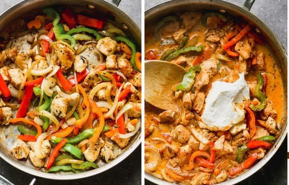

Cajun Chicken Pasta

Cream cajun chicken pasta with amazing flavors
This Cajun Chicken Pasta is a dinner winner with it’s creamy cajun sauce and
bites of tender pasta and chicken. It’s one of the easiest dinners,
ready in less than 30 minutes.
Ingridients
- 8 ounces farfalle pasta (or your favorite type)
- 2 Tablespoons butter
- 3 cloves garlic , minced
- 1 pound boneless skinless chicken breasts (about 2 breasts), cut into bite-size pieces
- 2 teaspoons Cajun seasoning , more or less, to taste
- 4 ounces cream cheese , softened and cut into small pieces
- 1 cup milk
- 3/4 cup freshly grated parmesan cheese
- 1/2 teaspoon freshly ground black pepper
- 1/2 teaspoon salt , more to taste, if needed
- Fresh vegetables, if desired , see note
Steps
- Cook pasta according to package instructions until al dente.
Drain, rinse with cold water and set aside.
- In a large pot or skillet, melt the butter over medium heat.
Add the garlic and cook for 30 seconds.
- Add the chicken pieces (and any desired vegetables*) and
season with cajun seasoning. Cook for 3-4 minutes,
until chicken is nearly cooked through.
Add the milk and cream cheese, stirring well until
- cream cheese has melted and sauce is smooth, 2-3 minutes.
Stir in pasta, parmesan cheese, salt and pepper. Serve immediately.